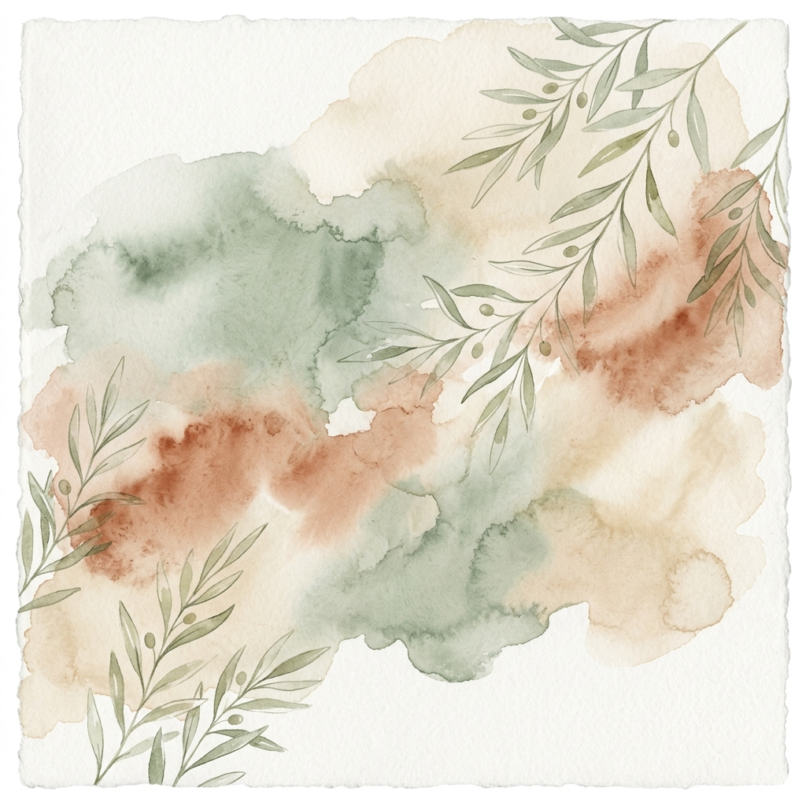
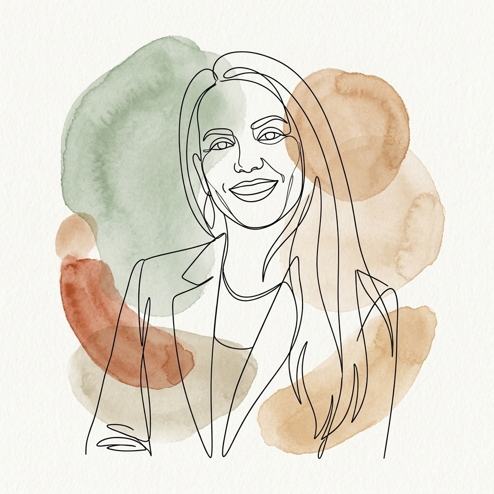
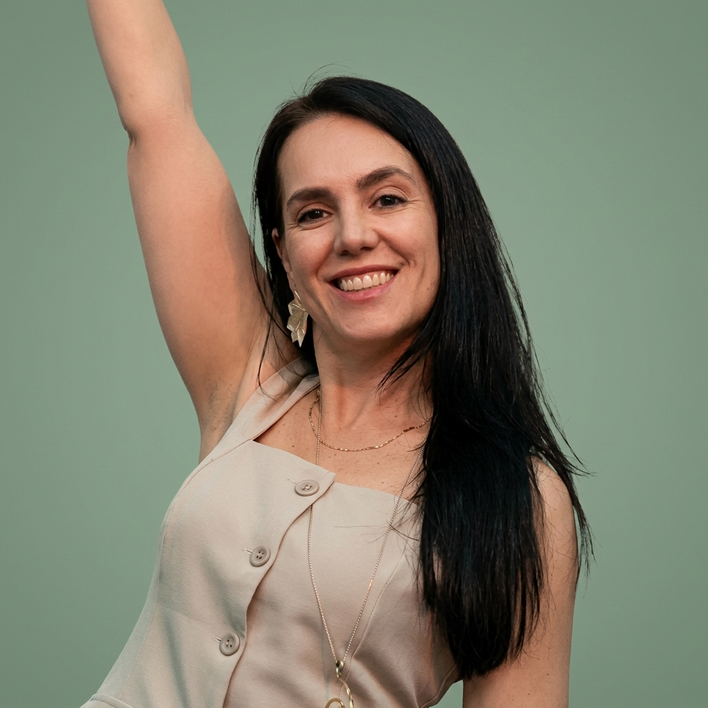
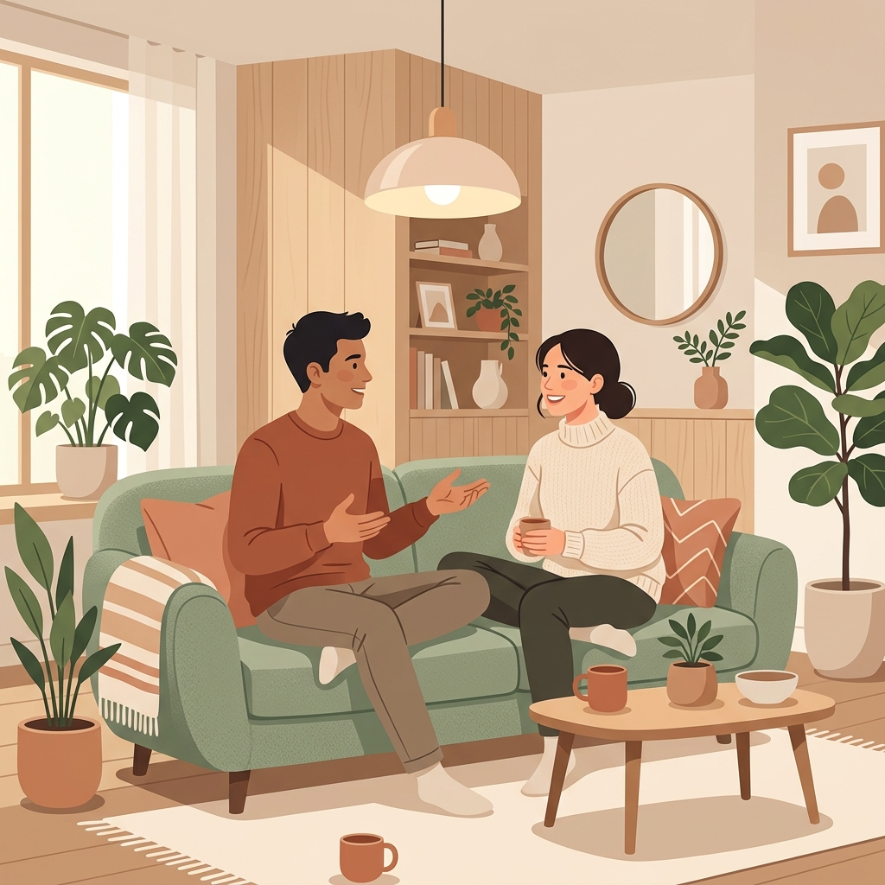

Um espaço seguro para o seu autoconhecimento e equilíbrio emocional
Psicoterapia clínica sob a Abordagem Sistêmica para homens e mulheres 20+. Atendimentos presenciais em Cascavel - PR ou Online para brasileiros em qualquer lugar do mundo.

“Olhar para dentro de si é o primeiro passo para a transformação.”


Josiane S. Tondo
CRP 08/22036Sou psicóloga clínica especializada na Abordagem Sistêmica, dedicada a oferecer um espaço de fala qualificado, acolhedor e seguro.
Foco meu trabalho no atendimento de homens e mulheres a partir de 20 anos (adultos 20+), compreendendo que as nossas dores e comportamentos estão diretamente ligados às relações e sistemas (familiares, afetivos e sociais) nos quais estamos inseridos.
Minha prática é pautada no sigilo, na ética e no respeito à individualidade. Busco auxiliar meus pacientes no autoconhecimento profundo, na superação de crises pessoais, na resolução de conflitos de relacionamento e no desenvolvimento de autonomia emocional.
Como funciona meu trabalho?
Processos psicoterapêuticos estruturados para apoiar homens e mulheres (20+) em suas demandas individuais ou de casal.
Psicoterapia Individual
Sessões voltadas para homens e mulheres (20+) focadas no tratamento de ansiedade, depressão, estresse, autoconhecimento, transições de vida e desenvolvimento de independência emocional.
- Atendimento online e presencial
- Foco em reconfigurar padrões relacionais
- Fortalecimento e autonomia individual

Terapia de Casal & Família
Facilitação de diálogos e reestruturação das dinâmicas relacionais sob a ótica sistêmica. Indicada para casais e familiares que buscam melhorar a comunicação e superar impasses conjuntos.
- Sessões online e presenciais conjuntas
- Compreensão das regras e ciclos do sistema
- Resolução construtiva de conflitos
Como funciona a psicoterapia?
Um caminho estruturado de forma acolhedora, respeitando seu tempo e focado na evolução constante.
Contato e Triagem
Daremos o primeiro passo através de uma conversa rápida no WhatsApp para entender seu objetivo inicial e encontrar o melhor dia e horário para a sua sessão inicial.
Sessão Inicial (Avaliação)
Na primeira sessão, realizamos uma entrevista de acolhimento (anamnese). É o momento para você expor suas queixas, conhecer minha metodologia e alinharmos as metas terapêuticas.
Processo Psicoterapêutico
Sessões semanais ou quinzenais, onde trabalhamos as questões identificadas. Desenvolvemos estratégias de enfrentamento e reflexões profundas para melhora emocional e autonomia.
Onde nos encontramos?
O consultório físico está estrategicamente localizado em Cascavel - PR, estruturado para oferecer privacidade, conforto e tranquilidade.
Consultório Cascavel
Rua Cuiabá, 1683, Sala 01, Bairro Maria Luiza
Cascavel - PR | CEP 85819-512
Atendimento Online
Sessões remotas seguras através de videoconferência para pacientes de qualquer local do mundo.
Telefone / WhatsApp
Perguntas Frequentes
Esclareça suas principais dúvidas sobre o processo de psicoterapia.
As sessões de psicoterapia clínica têm duração de 50 minutos. A frequência padrão é de uma vez por semana, mas pode ser ajustada conforme a necessidade e a evolução do paciente.
O sigilo é absoluto e é um dever ético garantido pelo Código de Ética do Psicólogo. Todas as suas informações, relatos e dados de atendimento são guardados com total confidencialidade e segurança, exceto nas raras exceções previstas em lei (como risco iminente de morte).
Os atendimentos são realizados de forma exclusivamente particular. No entanto, fornecemos recibos e declarações detalhadas para que você possa solicitar o reembolso integral ou parcial diretamente com o seu plano de saúde (consulte as condições e coberturas de reembolso com seu plano).
A consulta online possui a mesma eficácia e validade científica do atendimento presencial. É realizada por meio de uma plataforma de videochamada segura e criptografada (como Google Meet ou similar). Tudo o que você precisa é de um dispositivo com internet (computador ou celular) e um local privativo para conversar com tranquilidade.
A Abordagem Sistêmica enxerga o paciente não de forma isolada, mas em conexão direta com os sistemas a que pertence (sua família, seus relacionamentos, seu círculo social). O foco é entender como as dinâmicas e regras invisíveis dessas relações influenciam os comportamentos e conflitos atuais, gerando novas formas de comunicação e autonomia emocional.
Pronto para dar o próximo passo pelo seu desenvolvimento pessoal?
Agende uma consulta inicial (presencial ou online) e venha construir relações e caminhos mais saudáveis.
Agendar Consulta via WhatsApp